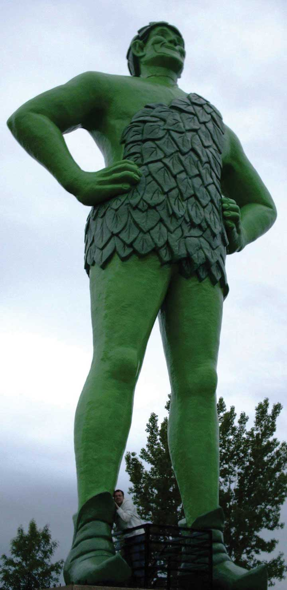
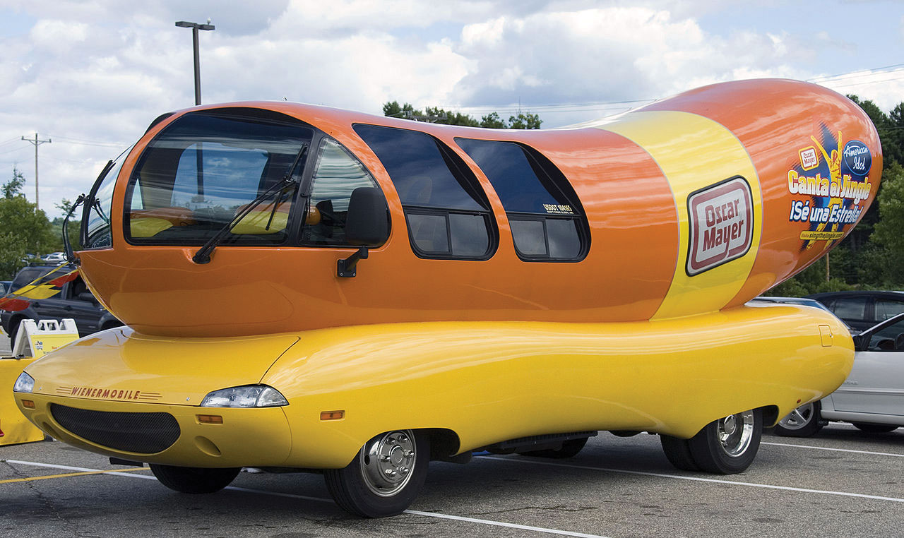
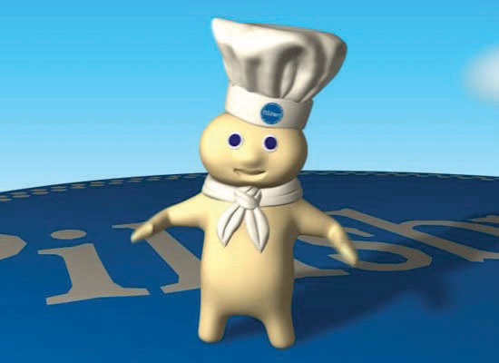
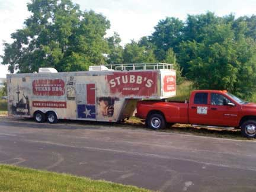
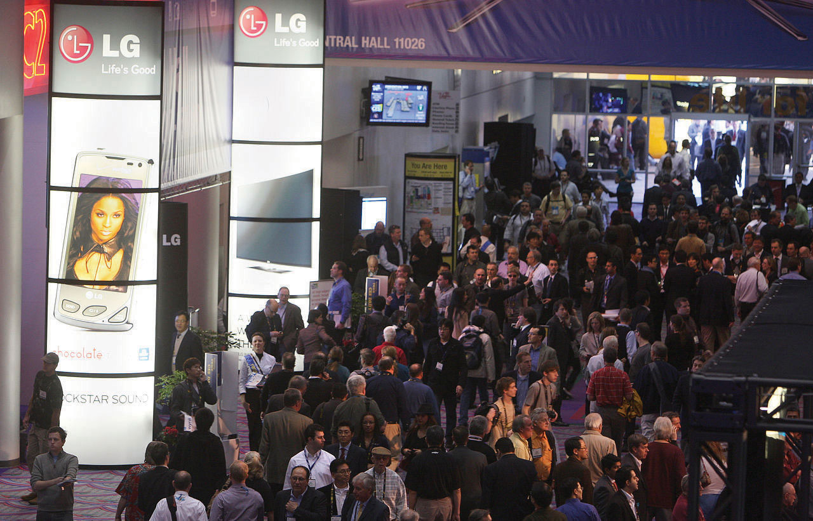
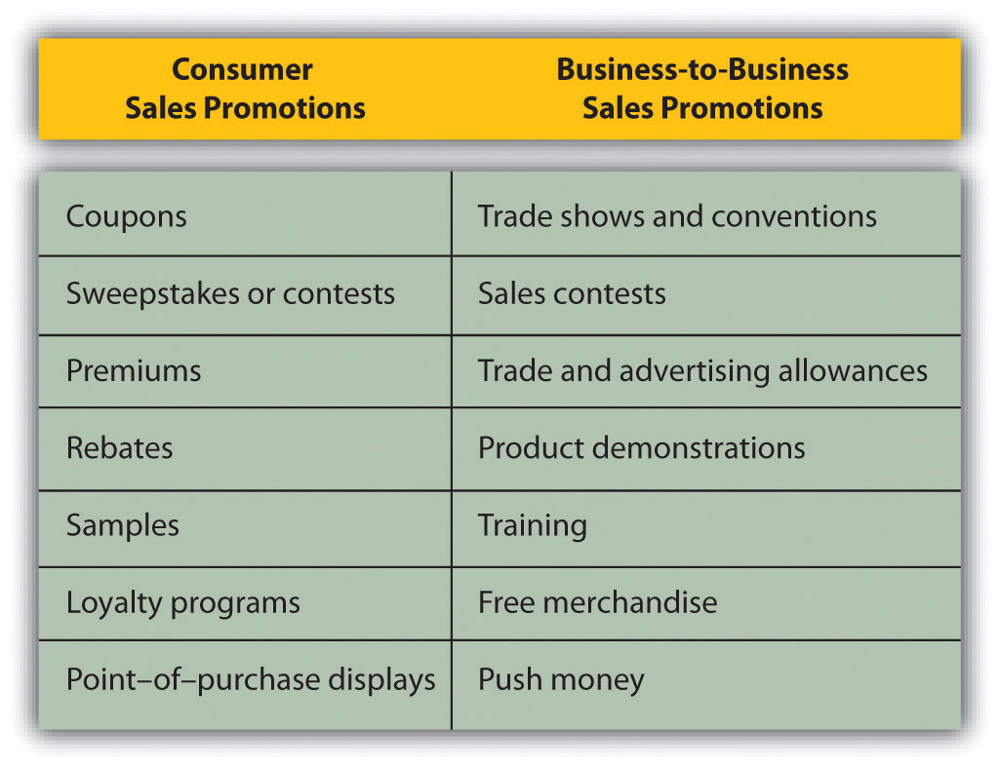

Communication helps businesses grow and prosper, creates relationships, strengthens the effectiveness of organizations, and allows people to learn about one another. Technology such as the Internet, and mobile phones, and social media affects the way we communicate and is changing the media landscape and the type of messaging strategy organizations use.
Do you feel lost without your cell phone? Are you more likely to respond to text messages than phone calls? Do you use the print publications (magazines, newspapers, references) at the library or do you find all your references online? Do your grandparents prefer different methods of communication? Think about how you get information and then think about how organizations can communicate with you and other target markets about their products, services, or causes. As we find new sources of information, the media and message strategies used by businesses must also change. However, organizations still want consumers to get consistent messages regardless of how they receive the information.
Once companies have developed products and services, they must communicate the value and benefits of the offerings to current and potential customers in both business-to-business (B2B) and business-to-consumer (B2C) markets. Integrated marketing communications (IMC)Approach designed to deliver one consistent message to buyers across an organization’s promotions. provide an approach designed to deliver one consistent message to buyers through an organization’s promotions that may span all different types of media such as TV, radio, magazines, the Internet, mobile phones, professional selling, and social media. For example, Campbell’s Soup Company typically includes the “Mm, mm good” slogan in the print ads it places in newspapers and magazines, in ads on the Internet, and in commercials on television and radio. Delivering consistent information about a brand or an organization helps establish it in the minds of consumers and potential customers across target markets. Although the messages are very similar, Campbell’s uses two variations of commercials designed to target different consumers. Watch the following two YouTube videos. You’ll notice that the message Campbell’s gets across is consistent. But can you figure out who is in the two target audiences?
A Meal That’s Always Popular with the Group
(click to see video)Campbell’s soup provides a good meal.
So Many Possibilities for Enjoying Soup
(click to see video)Campbell’s soup pleases people of all ages.
Changes in communication technology and instant access to information through tools such as the Internet and social mediaThe online communication that occurs among interdependent and interconnected networks of organizations, people, and communities. (online communication among interdependent and interconnected networks of organizations, people, and communities) explain one of the reasons why integrated marketing communications have become so important. Consumers are also changing. With access to many sources of information and often an interest in interactive media, consumers may collect more product information on their own. Marketers must organize and assemble available information to build a consistent brand message and make it relevant. With IMC, organizations can coordinate their messages to build the brand and develop strong customer relationships while also helping customers satisfy their needs.
FedEx’s two recent campaigns, the “We Understand” tagline launched in 2009 and the “Solutions that Matter” tagline launched in 2011, illustrate examples of IMC campaigns they used to deliver a consistent message across all media channels including television commercials, e-mails, social media, mobile marketing, direct mail, and the FedEx channel on YouTube.Dianna Dilworth, “FedEx Launches Fully Integrated Campaign, Featuring E-mail, Direct Mail,” Direct Marketing News, January 7, 2010, http://www.dmnews.com/fedex-launches-fully-integrated-campaign-featuring-e-mail-direct-mail/article/160829/ Watch the following videos to see examples of commercials in the FedEx campaigns.
The “We Understand” at FedEx Shows Customers that They Understand and Can Satisfy Their Needs
(click to see video)FedEx often uses a humorous appeal.
To Help Customers during a Weak Economy, FedEx Launched a New Campaign Called “Solutions that Matter”
(click to see video)Many consumers and business professionals seek information and connect with other people and businesses from their computers and phones. The work and social environments are changing, with more people having virtual offices and texting on their cell phones or communicating through social media sites such as Facebook, LinkedIn, Pinterest, and Twitter. As the media landscape changes, the money that organizations spend on different types of communication will change as well. Some forecasts indicate that companies will spend almost 27 percent of their total promotional budgets, or $160 billion, on electronic or non-traditional media by 2012.“PQ Media: New Media Spend to Hit $160B in 2012,” MarketingVOX, March 26, 2008, http://www.marketingvox.com/pq-media-new-media-spend-to-hit-160b-in-2012-037592 (accessed December 15, 2009).
Many college students are part of the millennial generation, and it is consumers from this generation (people like you perhaps) who are driving the change toward new communication technologies. You might opt to get promotions via mobile marketingMarketing media that is available in different places such as cell phones or on forms of transportation.—say, from stores on your cell phone as you walk by them or via a mobile gaming device that allows you to connect to the Web. Likewise, advertisements on Facebook are popular as businesses continue to utilize more social media. For example, when Honda let people on Facebook use the Honda logo to give heart-shaped virtual gifts on Valentine’s Day, over one and a half million people participated in the event and viewed the Honda Fit online in the process. Imagine the brand awareness generated for the Honda Fit.
Traditional media (magazines, newspapers, television) compete with media such as the Internet, texting, mobile phones, social media, user-generated content such as blogs, and YouTube as well as out-of-home advertisingBillboards and movable promotions that are displayed in a broad range of public spaces including tray tables on airplanes, the inside of subways, trains, buses, and even in bathroom stalls. such as billboards and movable promotions. You might have noticed that the tray tables on airplanes sometimes have ads on them. You have probably also seen ads on the inside of subway cars, in trains and buses, and even in bathroom stalls. These, too, are examples of out-of-home advertising.
Figure 11.3
The inside walls of many subways provide an opportunity for advertisers to reach commuters with their messages.
Source: Flickr.
As the media landscape changes, marketers may change the type of promotions they use in order to reach their target markets. With changing technology and social media (e.g., Facebook), less money is being budgeted for traditional media such as magazines and more money is budgeted for “non-traditional media.” Regardless of the type of media used, marketers use integrated marketing communications (IMC) to deliver one consistent message to buyers.
Although the money organizations spend promoting their offerings may go to different media channels, a company still wants to send its customers and potential consumers a consistent message (IMC). The different types of marketing communications an organization uses compose its promotion or communication mixCommunication tools that may include advertising, sales promotions, public relations and publicity, professional selling, and direct marketing., which consists of advertising, sales promotions, direct marketing, public relations and publicity, sponsorships (events and experiences), social media and interactive marketing, and professional selling. The importance of IMC will be demonstrated throughout the discussion of traditional media as well as newer, more targeted, and often interactive online media.
AdvertisingA message that is paid for and sent to large groups of the population at one time with an identified organization or brand (product or service) being promoted. involves paying to disseminate a message that identifies a brand (product or service) or an organization being promoted to many people at one time. The typical media that organizations utilize for advertising of course include television, magazines, newspapers, the Internet, direct mail, and radio. Businesses also advertise on mobile devices and social media such as Facebook, blogs, and Twitter.
Consumer sales promotionsPromotional activities (coupons, contests, rebates, mail-in offers) companies do in addition to advertising, public relations, and professional selling in order to help sell a product. consist of short-term incentives such as coupons, contests, games, rebates, and mail-in offers that supplement the advertising and sales efforts. Sales promotions include promotions that are not part of another component of the communication mix and are often developed to get customers and potential customers to take action quickly, make larger purchases, and/or make repeat purchases.
In business-to-business marketing, sales promotions are typically called trade promotionsBusiness-to-business marketing sales promotions such as trade shows, sponsorships, and event marketing. because they are targeted to channel members who conduct business or trade with consumers. Trade promotions include trade shows and special incentives given to retailers to market particular products and services, such as extra money, in-store displays, and prizes.
Direct marketingDelivering personalized promotional materials directly to individual consumers. Materials may be delivered via mail, catalogs, Internet, e-mail, telephone, or in person. involves the delivery of personalized and often interactive promotional materials to individual consumers via channels such as mail, catalogs, Internet, e-mail, telephone, and direct-response advertising. By targeting consumers individually, organizations hope to get consumers to take action.
Professional sellingAn interactive, personal, paid promotional approach between a buyer and a seller. is an interactive, paid approach to marketing that involves a buyer and a seller. The interaction between the two parties can occur in person, by telephone, or via another technology. Whatever medium is used, developing a relationship with the buyer is usually something the seller desires.
When you interview for internships or full-time positions and try to convince potential employers to hire you, you are engaging in professional selling. The interview is very similar to a buyer-seller situation. Both the buyer and seller have objectives they hope to achieve. Business-to-business marketers generally utilize professional selling more often than most business-to-consumer marketers. If you have ever attended a Pampered Chef party or purchased something from an Amway or Mary Kay representative, you’ve been exposed to professional selling.
Public relations (PR)The process of creating a positive image for a company, an offering, or a person via publicity. involves communication designed to help improve and promote an organization’s image and products. PR is often perceived as more neutral and objective than other forms of promotion because much of the information is tailored to sound as if it has been created by an organization independent of the seller. Public relations materials include press releases, publicity, and news conferences. While other techniques such as product placement and sponsorships, especially of events and experiences, tend to generate a lot of PR, the growth of expenditures and importance of sponsorships are so critical for so many companies that it is often considered a separate component in the communication mix. Many companies have internal PR departments or hire PR firms to find and create public relations opportunities for them. As such, PR is part of a company’s promotion budget and their integrated marketing communications.
SponsorshipsThe financial or other support for events, venues, or experiences that provide the opportunity to target specific groups and enhance a company’s image. typically refer to financial support for events, venues, or experiences and provide the opportunity to target specific groups. Sponsorships enhance a company’s image and usually generate public relations. With an increasing amount of money being spent on sponsorships, they have become an important component of the promotion mix.
Technology is changing the way businesses and individuals communicate. Organizations use Integrated Marketing Communications (IMC) to deliver a consistent message across all components of the promotion mix. The promotion (communication) mix is composed of advertising, professional selling, public relations, sponsorships (events and experiences), sales promotion, direct marketing, and online media, including social media.
A marketing manager from one company might decide to focus on social media, whereas a marketing manager from another company might decide to focus her company’s efforts on television commercials. Why do companies select different types of media for what may be perceived as similar messages? As Figure 11.5 "Factors That Influence Selection of Promotion Mix" shows, a number of factors affect the choice of promotion mix elements.
Figure 11.5 Factors That Influence Selection of Promotion Mix

Budget Available. For many companies, the budget available to market a product determines what elements of the promotion mix are utilized. The budget affects a promotion’s reachThe number of people exposed to a message. (number of people exposed to the message) and frequencyHow often people are exposed to a message. (how often people are exposed). For example, many smaller companies may lack the money to create and run commercials on top-rated television shows or during the Super Bowl. As a result, they may not get the exposure they need to be successful. Other firms such as McDonald’s may come up with creative ways to reach different target markets. For example, McDonald’s targeted college students with a special promotion that it filmed live in a Boston University lecture.
Stage in the product life cycle. The stage in the product life cycle also affects the type and amount of promotion used. Products in the introductory stages typically need a lot more promotional dollars to create awareness in the marketplace. Consumers and businesses won’t buy a product if they do not know about it. More communication is needed in the beginning of the product life cycle to build awareness and trial.
Type of product and type of purchase decision. Different products also require different types of promotion. Very technical products and very expensive products (high involvement) often need professional selling so the customer understands how the product operates and its different features. By contrast, advertising is often relied upon to sell convenience goods and products purchased routinely (low involvement) since customers are familiar with the products and they spend relatively little time making purchase decisions.
Target market characteristics and consumers’ readiness to purchase. In order to select the best methods to reach different target markets, organizations need to know what types of media different targets use, how often they make purchases, where they make purchases, and what their readiness to purchase is as well as characteristics such as age, gender, and lifestyle. Some people are early adopters and want to try new things as soon as they are available, and other groups wait until products have been on the market for a while. Some consumers might not have the money to purchase different products, although they will need the product later. For example, are most college freshmen ready to purchase new cars?
Consumers’ preferences for various media. We’ve already explained that different types of consumers prefer different types of media. In terms of target markets, college-aged students may prefer online, cell phone, mobile marketing, and social media more than older consumers do. Media preferences have been researched extensively by academics, marketing research companies, and companies to find out how consumers want to be reached.
Regulations, competitors, and environmental factors. Regulations can affect the type of promotion used. For example, laws in the United States prohibit tobacco products from being advertised on television. In some Asian countries, controversial products such as alcohol cannot be advertised during Golden (prime) time on television. The hope is that by advertising late at night, young children do not see the advertisements. The strength of the economy can have an impact as well. In a weak economy, some organizations use more sales promotions such as coupons to get consumers into their stores. The risk is that consumers may begin to expect coupons and not want to buy items without a special promotion.
Availability of media. Organizations must also plan their promotions based on availability of media. The top-rated television shows and Super Bowl ad slots, for example, often sell out quickly. Magazines tend to have a longer lead time, so companies must plan far in advance for some magazines. By contrast, because of the number of radio stations and the nature of the medium, organizations can often place radio commercials the same day they want them to be aired. Social media and online media may be immediate, but users must be careful about what they post and their privacy. Uncontrollable events can affect a company’s promotions, too. For example, when a disaster occurs, TV stations often cut advertisements to make way for continuous news coverage. If there is a crisis or disaster and your company is in the middle of a promotion being advertised on TV, you will likely have to scramble to reach consumers via another medium.
Do you use TiVo or a digital video recorder (DVR) to record movies or television shows so you can watch them when you want without television commercials? Do you ever use the remote to skip the commercials or zap (change channels) to look at different shows? Think about which television shows you choose to watch, which magazines you read, which radio stations you select. The perceptual processThe way in which people select the information they are exposed to, pay attention to it, interpret it, and retain it. is how a person decides what to pay attention to and how to interpret and remember different things, including information in advertising. By selecting a magazine, a television show, or even an elective class in school, you’re selecting what you’re exposed to and deciding what gets your attention. However, your selection does not insure you’ll either pay attention or remember or correctly interpret what you see or hear.
Think about what else you are doing when you watch television, when you are studying, or when you are listening to the radio. It’s a hot day in July and you’re enjoying a day at the beach. Your friends brought a radio and the volume is turned up so you can hear all the music. If you’re listening to the music or talking to a friend at the beach while you’re listening to the radio, do you hear or pay attention to the commercials? Do you remember which products were advertised? If you’re with a friend and hear someone else say your name, do you pay more attention to the person talking about you than to your friend?
The same thing happens when you are watching a television show, reading a magazine, or studying for a test. The phone rings or your friends show up and your attention shifts to them. With so many different types of distractions and technology (such as recording devices), imagine how difficult it is for an advertiser to get you to pay attention much less remember the message. Do you remember the terms you memorized for a test a day later? Do you know your friends’ phone numbers and e-mail addresses or do you just find their names on your contact list? To increase retention, advertisers may repeat the same message multiple times in different places, but they must be careful that consumers don’t get so tired of the message that there is a negative effect.
The communication process illustrates how messages are sent and received, as shown in Figure 11.6 "The Communication Process". The source (or sender) encodesSenders must translate or convert benefits and value of a product or service into a message for the message channel selected., or translates, a message so that it’s appropriate for the message channel—say, for a print advertisement, TV commercial, or store display—and shows the benefits and value of the offering. The receiver (customer or consumer) then decodesReceivers interpret messages., or interprets, the message. For effective communication to occur, the receiver must interpret the message as the sender intended.
You’re ready to go home on a Friday afternoon and you hear someone mention an upcoming event on Saturday. However, you did not listen to all the details and assume the event is the next day, not the following Saturday. Since you already made other plans for the next day, you don’t even consider showing up the following Saturday. Has this ever happened to you? You don’t show up at an event because you didn’t interpret the message correctly? If you do not hear someone correctly, misread information, or misinterpret a message, you might think a product or service provides different benefits or is easier or harder to use than it really is.
InterferenceAny distractions or noise that senders and receivers face during the transmission of a message., or noise, can distort marketing messages. Factors such as poor reception, poor print quality, problems with a server, or a low battery can interfere with your getting messages. Interference includes any distractions receivers and senders face during the transmission of a message. For example, when you were growing up did you see commercials for toys such as the pogo ball, which appeared to be so easy to use but when you tried to jump up and down on it, you found out it was extremely difficult? The same thing may happen if you’re studying for an exam while you’re talking on the phone. The conversation interferes with remembering what you’re reading. If a friend tells you a story, then you tell another friend, and that person tells someone else, will the message be the same after it is relayed to multiple people? If you miss class and borrow someone else’s notes, do you understand what they mean? Not only must advertisers try to present consistent messages (IMC), they must also try to ensure that you interpret the message as they intended.
Purchasing a product provides the sender with feedbackMeans of telling sellers you saw their information and wanted to try their product., which often tells the seller that you saw information and wanted to try the product. If you use any coupons or promotions when you buy a product, the advertiser knows which vehicle you used to get the information. Market research and warranty registration also provide feedback.
We tend to purchase products and remember information that has some relevance to our personal situation or beliefs. If you have no need for a product or service, you might not pay attention to or remember the messages used to market it. Advertisers also want you to remember their brands so that you’ll think of their products/services when you need to make a purchase.
Figure 11.6 The Communication Process

Many factors, such as a firm’s marketing budget, the type of product, regulations, target customers, and competitors, influence what composes the promotion mix. Depending on what medium is used, marketers use the communication process to encode or translate ideas into messages that can be correctly interpreted (decoded) by buyers. However, marketers must determine how to get consumers’ attention and avoid as much interference and noise as possible. Perceptual processes include how a person decides what to pay attention to and how to interpret and remember different things.
Advertising is paid promotion with an identified sponsor that reaches many people at one time and can be repeated many times. One of the biggest issues an organization must address is which mediumThe general types of communication (e.g., television or radio) available for advertisers. or media provides the biggest bang for the buck, given a product’s characteristics and target market. For example, a thirty-second ad aired during Super Bowl XLII cost $2.7 million. Since 97.5 million people watched the game, the cost per ad was less than three cents per viewer. For Super Bowl XLVI, the cost for a thirty-second spot increased to $3.5 million, and approximately 111.3 million viewers watched. However, do the ads pay off in terms of sales? Many advertising professionals believe many of the ads don’t, yet the ads probably do create brand awareness or a public relations type of effect since many people tune in and then talk about Super Bowl commercials.
Whether it’s a commercial on the Super Bowl or an ad in a magazine, each medium (e.g., television, magazines, mobile phones, social media) has different advantages and disadvantages. Mobile phones provide continuous access to people on the go, although reception may vary in different markets. Radios, magazines, and newspapers are also portable. People tend to own more than one radio, but there are so many radio stations in each market that it may be difficult to reach all target customers. People are also typically doing another activity (e.g., driving or studying) while listening to the radio, and without visuals, radio relies solely on audio. Both television and radio must get a message to consumers quickly. Although many people change channels (zap) or leave the room during commercials, television does allow for visual demonstrations. In an effort to get attention, advertisers changed the volume for television commercials for years. However, the Federal Trade Commission passed a regulation effective in 2010 that prohibits advertisers from changing the volume level of commercials on television, although consumers still notice that some commercials are louder than the regular shows.
People save magazines for a long time, but advertisers must plan in advance to have ads in certain issues. With the Internet, both magazines and newspapers are suffering in terms of readership and advertising dollars. Many major newspapers, such as papers in Seattle and Chicago, have gone out of business. Other newspapers, such as USA Today are free online, although printed copies are also available. The fact that local retailers get cheaper rates for advertising in local newspapers may encourage both local businesses and consumers to support newspapers in some markets.
Figure 11.7

The first issue of Sports Illustrated was published August 16, 1954. Today, the companies that advertise in Sports Illustrated do so not only in the magazine but also on the Web site.
Source: Wikimedia Commons.
Within each different medium, an organization might select a different vehicle. A vehicleThe specific means, such as a particular magazine or a specific television show, within a medium to reach a selected target market. is the specific means within a medium to reach a selected target market. For example, if a company wants to develop television commercials to reach teenagers, it might select Gossip Girl on the CW as the best vehicle. If an organization wants to use magazines to reach males interested in sports, it might use Sports Illustrated. Sports Illustrated launched SI.com so readers could get up-to-date information on the Web. On SI.com, readers can also access links to popular articles and “SIVault” (http://vault.sportsillustrated.cnn.com/vault), where they can search articles and pictures that have run in the magazine since it was launched in 1954. The printed SI swimsuit edition continues to be one of the most popular issues of any magazine. Over 67 million consumers saw the 2010 SI swimsuit franchise (via magazine, mobile, SIVault, etc.).http://simediakit.com/property-single.xhtml?property_id=36
Direct marketing allows organizations to target a specific set of customers, measure the return on investment (ROI), and test different strategies before implementing to all targeted consumers. It can be personalized as a call for consumers to take actionIn direct marketing, requesting consumers to make a specific response such as a purchase or a call for more information., which is a desired response. However, direct marketing is very intrusive, and many consumers may ignore attempts to reach them. Catalogs and direct mailA form of direct marketing that is mailed to consumers. It can be personalized and ask consumers to make a certain response. Catalogs are often part of direct mail campaigns. provide popular alternatives for many marketers, although the volume of mail sent may drop significantly in a weak economy.
TelemarketingA form of direct marketing that involves contacting people by phone. involves direct marketing by phone. You may have just sat down for dinner when the phone rings with a local charity calling to raise money. The calls always seem to come at dinner or at other inconvenient times. Although expensive, telemarketing can be extremely effective for charitable organizations and different service firms and retailers. However, because some consumers have negative perceptions of telemarketers, many organizations do not use it. The Do Not Call RegistryEstablished by the Federal Trade Commission (FTC) in 2008, a service that prevents organizations from calling any phone numbers registered with the FTC., which was established in 2008, prevents organizations from calling any numbers registered with the Federal Trade Commission.
Direct response advertisingDirect marketing that includes an offer and a call to action. includes an offer and a call to action. You may be watching television when an interesting product is shown. The announcer says, “Call now and receive a bonus package.” They want consumers to call to purchase the product or to get more information. The Internet provides the preferred direct response medium for direct marketing because it is less expensive and easier for the organization to utilize.
Advertising is paid for communication that has an identified sponsor and reaches many people at one time. Once companies decide on different media (e.g., magazines or television), they must also select specific vehicles (e.g., Sports Illustrated or the Super Bowl), Direct marketing allows organizations to target specific individuals and use direct response advertising. Telemarketing, the Internet, direct mail, and catalogs are popular direct marketing methods.
When organizations want to communicate value, they must determine what message strategies work best for them. Smart organizations determine a product’s unique selling proposition (USP)A specific product benefit consumers will remember., or specific benefit consumers will remember. Domino’s “Pizza delivered in 30 minutes or it’s free” is a good example of a unique selling proposition. Likewise, Nike’s global slogan “Just Do It” helps athletes and other consumers realize their potential, and many consumers may think of all the things that they do when they use Nike products. Watch the following video on Nike to get an idea of the many different activities people from different countries do when using Nike products.
People around the World Use Nike Products
(click to see video)Nike products are used for many different sports by all types of athletes.
Nike and Coca-Cola have been extremely successful in adapting their promotions to different international markets. Both companies have very popular global brands. Sometimes the same promotions work in different cultures (countries), but others must be adapted for different international audiences—similar to the way products may be adapted for international markets. Companies must be careful of how words translate, how actions are interpreted, how actors (or models) look, and what different colors in ads may mean.
When deciding on a message strategy, organizations must consider the audience, the objectives of the promotion, the media, and the budget, as well as the USP and the product. Knowing your audience and whom you are trying to reach is critical. The more advertisers know about the consumers (or businesses) exposed to the message, the better. Commercials for golf products shown during golf tournaments focus specifically on golfers. Other commercials, such as several recent ones for the fast-food chain Hardee’s, are on the risqué side. They may appeal to some college students but may offend other consumers such as senior citizens. What do you think? Do you think Hardee’s is trying to reach a younger demographic? Do the ads make you more inclined to purchase fast food from Hardee’s? See the Hardee’s commercial in the video below.
Commercial for Hardee’s Thickburger
(click to see video)This commercial that may be offensive to some consumers.
Advertisers must also examine their promotion objectives. What are they trying to accomplish with their promotions? Are they trying to build awareness for a new product, are they wanting to get people to take action immediately, or are they interested in having people remember their brand in the future? Building primary demandDemand for a product category (e.g., orange juice) versus a product brand (e.g., Tropicana)., or demand for a product category, such as orange juice, might be one objective, but a company also wants to build selective demandDemand for a specific brand (Tropicana orange juice)., or demand for its specific brand(s), such as Tropicana orange juice.
Other common objectives follow the AIDA modelA model that includes several different promotion objectives, including attention, interest, desire, and action. One objective may be to get attention. Other objectives of promotion may be to generate interest and desire. The ultimate objective is to get customers to take action or purchase the product or service. (attention, interest, desire, and action). AIDA objectives typically are achieved in steps. First, companies focus on attention and awareness of a product or service, which is especially important for new offerings. If a consumer or business is not aware of a product or service, they won’t buy it. Once consumers or businesses are aware of products or services, organizations try to get consumers interested and persuade them that their brands are best. Ultimately, companies want consumers to take action or purchase their products or services.
Organizations must also determine what type of appeal to use and how to structure their messages. Some of the common advertising appeals are humorous, emotional, frightening (fear), rational (informative), and environmentally conscious. If you were asked to name your favorite commercial, would it be one with a humorous appeal? Many people like commercials that use humor because they are typically entertaining and memorable. Humor sells, but firms must be careful that the brand is remembered. Some commercials are very entertaining, but consumers cannot remember the brand or product.
Each year, some of the most talked-about commercials take place during the Super Bowl. Many people watch the game just to see the commercials. Watch the following YouTube videos to see one of the top ten Super Bowl commercials of all time and how newer commercials relied on a similar approach. Notice how many of them use a humorous appeal. But do you think some are more effective than others? In other words, will viewers actually buy the product(s)?
Often Rated the Best Super Bowl Commercial Ever
(click to see video)This commercial uses a child and fun to appeal to many consumers.
Rated One of the Best Super Bowl Commercials of 2009
(click to see video)Coke Zero uses the same approach in 2009 as the award-winning commercial in the 1980 Super Bowl.
Pepsi’s Version of “Asking for a Shirt”
(click to see video)Pepsi uses a humorous approach for a commercial although it was not a Super Bowl commercial.
Pepsi and the Song, “Your Cheatin Heart”
(click to see video)Pepsi used a similar strategy in 1996.
Companies must also be careful when using fear appeals so consumers don’t get too alarmed or frightened. A few years ago, Reebok had to discontinue a TV ad because it upset so many people. The ad showed a bungee jumper diving off a bridge, followed by a shot of just his shoes hanging from the bridge by the bungee cord. That ad provoked people because it implied the jumper had fallen to his death.
Firms also decide whether to use strategies such as an open-ended or closed-ended message; whether to use a one-sided or two-sided message; and whether to use slogans, characters, or jingles. An open-ended messageA promotional message that allows the consumer to draw his or her own conclusions. allows the consumer to draw his or her own conclusion, such as a commercial for perfume or cologne. A closed-ended messageA promotional message that draws a logical conclusion. draws a logical conclusion. Most messages are one sided, stressing only the positive aspects, similar to what you include on your résumé. However, two-sided messages are often utilized as well. Pharmaceutical companies often show both the positive aspects (benefits) of using a drug and the negative aspects of not using it. (Of course, U.S. laws require companies to list the side effects of prescriptions—hence the long “warnings” you hear and read about in conjunction with drug ads.)
Example of an Open-Ended Commercial
(click to see video)Do you interpret cologne and perfume ads the same way you see them portrayed on television?
The order of presentation also affects how well consumers remember a brand. If you forgot about a twenty-five-page term paper that you had to write before the next day of class, which sections of the paper would be the strongest? Would the beginning, the end, or the middle be the best section? Many students argue that either the beginning or the end is most important, hoping that the instructor does not read the entire paper carefully. The same strategy is true for commercials and advertisements. The beginning and the end of the message should be strong and include the brand name. That way, if consumers hear or read only part of the message, they will hopefully remember the brand name.
Figure 11.8
The Jolly Green Giant helped kids remember the Green Giant jingle and hopefully reminded them to eat their vegetables.
Source: Wikimedia Commons.
Some companies use characters or mascots and/or jingles or slogans. Although media is changing, many of the characters and jingles have stayed the same for decades. When you think of Campbell’s soup, do you think “Mm, mm good”? Just as the commercials viewed in the beginning of the chapter focused on “Mm, mm good,” Campbell’s has used the same slogan since the early 1900s, and the Campbell Soup Kids were created in 1904. Although Campbell’s changed its slogan in 1998, the company still uses the “Mm, mm good” slogan in most of its promotions across different media. Apparently, the slogan still resonates with consumers. Other jingles, characters (mascots), or symbols you may be familiar with include the Jolly Green Giant, the Wienermobile, and the Pillsbury Doughboy known as Poppin’ Fresh. How successful are advertisers in making sure consumers know their brands? Try the brand quiz at http://www.smartmarketingquiz.com/ and see how many brand icons you know. The following figures also illustrate some of these characters and symbols.
Figure 11.9
The Wienermobile tours the country.
Source: Wikimedia Commons.
Figure 11.10
The Pillsbury Doughboy, Poppin’ Fresh, is popular around the world.
Source: Wikimedia Commons.
Do you remember the Oscar Mayer jingles? Watch the video below and see if you find yourself singing along. The jingle was originally developed in 1963 and is now recorded in different languages. In 2006 Oscar Mayer promoted a singing contest for the jingle, which still remains popular. Kraft’s promotions are also consistent across media, using the visuals from commercials as pictures in their print ads in both English and Spanish versions, following the IMC concept.
The Original Oscar Mayer Wiener Song
(click to see video)Often considered one of the best original ads on TV, the Oscar Mayer Wiener song is known by people of all ages.
The Oscar Mayer Bologna Song
(click to see video)The Oscar Mayer Bologna song is also well known among consumers of all ages.
Organizations must determine promotion objectives, or what they want to accomplish with their promotions. For example, if a company has a new brand they may want to generate awareness or attention. Later, they may focus on persuading customers to buy their brand. Each brand needs to have a unique selling proposition (USP) for customers to remember and want their product. Depending on their objectives and their USP, marketers must develop a message strategy. Some companies prefer humor or rational appeals while others may use a fear appeal.
An offering’s budget is a critical factor when it comes to deciding which message strategies to pursue. Several methods can be used to determine the promotion budget. The simplest method for determining the promotion budget is often merely using a percentage of last year’s salesA budgeting technique based on a set percentage of current or projected sales. or the projected sales for the next year. This method does not take into account any changes in the market or unexpected circumstances. However, many firms use this method because it is simple and straightforward.
The affordable methodA budgeting technique whereby companies spend what they think they can afford promoting a product., or what you think you can afford, is a method used often by small businesses. Unfortunately, things often cost more than anticipated, and you may not have enough money. Many small businesses think they’re going to have money for promotion, but they run out and cannot spend as much on promotion as they had hoped. Such a situation may have happened to you when you planned a weekend trip based on what you thought you could afford, and you did not have enough money. As a result, you had to modify your plans and not do everything you planned.
Other companies may decide to use competitive parityA budgeting method whereby companies make sure their promotion budgets are comparable to their competitors’.—that is, they try to keep their promotional spending comparable to the competitors’ spending level. This method is designed to keep a brand in the minds of consumers. During a recession, some firms feel like they must spend as much—if not more—than their competitors to get customers to buy from them. Other companies are forced to cut back on their spending or pursue more targeted promotions. When Kmart faced bankruptcy, they cut back on expenditures, yet they kept their advertising inserts (free-standing inserts, or FSI) in Sunday newspapers to remain competitive with other businesses that had an FSI.
A more rational and ideal approach is the objective and task methodA budget based on a company’s promotion objectives and the costs of the activities and tasks necessary to accomplish those objectives., whereby marketing managers first determine what they want to accomplish (objectives) with their communication. Then they determine what activities—commercials, sales promotions, and so on—are necessary to accomplish the objectives. Finally, they conduct research to figure out how much the activities, or tasks, cost in order to develop a budget.
Part of the budgeting process includes deciding how much money to allocate to different media. Although most media budgets are still spent predominantly on traditional media, shifts in spending are occurring as the media landscape continues to change. Mobile marketing continues to become more popular as a way to reach specific audiences. Over one-third of cell phone users were exposed to mobile advertising in 2009 and 16 percent of the people exposed to mobile advertising responded to the ads via text messaging. Younger people are typically the most accepting of mobile advertising.Jack Loechner. “Advertising Growth Spreads in All Mobile Formats,” Research Brief, MediaPost Blogs, May 27, 2009, http://www.mediapost.com/publications/article/106675/advertising-growth-spreads-in-all-mobile-formats.html (accessed March 12, 2012). Spending on mobile ads is expected to grow 80% from $1.45 billion in 2011 to $2.61 billion in 2012. A big part of the growth is due to the mobile search business of Google.Delo Cotton, “Mobile-Ad Spending Projected to Reach $2.61B in 2012,” Ad Age Digital, January 26, 2012, http://adage.com/article/digital/mobile-ad-spending-projected-reach-2-61b-2012/232334/
Figure 11.11 Stubb’s Bar-B-Q Trailer—Out-of-Home Advertising That Is Mobile Marketing
The Stubb’s Bar-B-Q trailer travels around the country promoting the brand name and product.
Source: Photo courtesy of Stubb’s Legendary Kitchen.
The manufacturers of most major brands use texting and multimedia messages. Mobile marketing allows advertisers to communicate with consumers and businesses on the go. Over half of Chinese, Korean, Indian, and Thai Internet users access social media sites through their phones rather than through computers.“Social Network Site Users Ready to Go Mobile But Telecom Carriers Need to Set the Stage for Mass Adoption, Says IDC,” IDC, November 17, 2009, http://www.idc.com/AP/pressrelease.jsp?containerId=prSG22084309 (accessed January 20, 2010). While many marketers plan to use electronic devices for their mobile-marketing strategies, other firms may use movable or mobile promotions (see Figure 11.11 "Stubb’s Bar-B-Q Trailer—Out-of-Home Advertising That Is Mobile Marketing"), which, as discussed earlier, are also considered out-of-home advertising.
Companies can determine how much to spend on promotion several different ways. The percent of sales method, in which companies use a set percentage of sales for their promotion, is often the easiest method to use. Small companies may focus on what they think they can afford while other organizations may try to keep their promotions relatively equal to their competitors’. The objective and task approach takes objectives into consideration and the costs of the tasks necessary to accomplish objectives in order to determine the promotion budget.
Sales promotions are activities that supplement a company’s advertising, public relations, and professional selling efforts. They create incentives for customers to buy products more quickly and make larger purchases. Sales promotions are often temporary, but when the economy is weak, sales promotions become even more popular for consumers and are used more frequently by organizations.
Samples, coupons, premiums, contests, and rebates are examples of consumer sales promotions. Do you like free samples? Most people do. A free sampleA small amount of a product given to consumers to try for free. allows consumers to try a small amount of a product so that hopefully they will purchase it. The strategy encourages trial and builds awareness. You have probably purchased a product that included a small free sample with it—for example, a small amount of conditioner packaged with your shampoo. Have you ever gone to a store that provided free samples of different food items? Although sampling is an expensive strategy, it is usually very effective for food products. People try the product, and the person providing the sample tells them about the product and mentions any special prices for it.
In many retail grocery stores, coupons are given to consumers with the samples. CouponsProvide an immediate price reduction off an item that is reimbursed to the retailer by the manufacturer. provide an immediate price reduction off an item. The amount of the coupon is later reimbursed to the retailer by the manufacturer. The retailer gets a handling fee for accepting coupons. When the economy is weak, more consumers cut out coupons and look for special bargains such as double coupons and buy-one-get-one-free (BOGO) coupons. They may also buy more store brands.
While many consumers cut coupons from the inserts in Sunday newspapers, other consumers find coupons online or on their cell phones. Point-of-purchase displaysIn-store displays designed to encourage consumers to buy products immediately., including coupon machines placed next to products in stores, encourage consumers to buy a brand or product immediately. When a consumer sees a special display or can get a coupon instantly, manufacturers hope the sales promotion increases sales. Stores may also provide coupons for customers with loyalty cards to encourage them to select particular brands and products.
Mobile marketing and the Internet provide consumers in international markets access to coupons and other promotions. In India, the majority of coupons used are digital, while paper coupons have the largest share in the United States. Over 80 percent of diapers are purchased with coupons; imagine how much easier and less wasteful digital coupons scanned from a mobile phone are for both organizations and consumers.
Other sales promotions may be conducted online and include incentives such as free items, free shipping, coupons, and sweepstakes. For example, many online merchants such as Shoe Station and Zappos offer free shipping and free return shipping to encourage consumers to shop online. Some firms have found that the response they get to their online sales promotions is better than response they get to traditional sales promotions.
Another very popular sales promotion for consumers is a premium. A premiumSomething consumers get for free or for a small handling charge with proof of purchase. is something you get either for free or for a small shipping and handling charge with your proof of purchase (sales receipt or part of package). Remember wanting your favorite cereal because there was a toy in the box? The toy is an example of a premium. Sometimes you might have to mail in a certain number of proofs of purchase to get a premium. The purpose of a premium is to motivate you to buy a product multiple times. What many people don’t realize is that when they pay the shipping and handling charges, they may also be paying for the premium.
Contests or sweepstakes also attract a lot of people. ContestsSales promotions that people enter or participate in order to win a prize. are sales promotions people enter or participate in to have a chance to win a prize. The Publisher’s Clearing House Sweepstakes and the Monopoly Game at McDonald’s are both examples. The organization that conducts the sweepstakes or contest hopes you will not only enter its contest but buy some magazines (or more food) when you do.
Want to Subscribe?
(click to see video)The Fantanas are back! Watch the video for a contest being conducted by Fanta soft drinks. As with other sales promotion tools, the idea is to get you to buy a product and more specifically to make repeat purchases.
Loyalty programsSales promotions designed to get repeat business. are sales promotions designed to get repeat business. Loyalty programs include things such as frequent flier programs, hotel programs, and shopping cards for grocery stores, drugstores, and restaurants. Sometimes point systems are used in conjunction with loyalty programs. After you accumulate so many miles or points, an organization might provide you with a special incentive such as a free flight, free hotel room, or free sandwich. Many loyalty programs, especially hotels and airlines, have partners to give consumers more ways to accumulate and use miles and points.
RebatesA promotion whereby part of the purchase price of an offering is refunded to a customer after the customer completes a form and sends in the proof of purchase (sales receipt). are popular with both consumers and the manufacturers that provide them. When you get a rebate, you are refunded part (or all) of the purchase price of a product back after completing a form and sending it to the manufacturer with your proof of purchase. The trick is completing the paperwork on time. Although different types of sales promotions work best for different organizations, rebates are very profitable for companies because many consumers forget or wait too long to send in their rebate forms. Consequently, they do not get any money back. Rebates sound great to consumers until they forget to send it back.
In business-to-business (B2B) marketing, sales promotions are typically called trade promotions because they are targeted to channel members who conduct business or “trade” with consumers. Trade promotionsSales promotions aimed at businesses. include trade shows, conventions, event marketing, trade allowances, training, and special incentives given to retailers to market particular products and services, such as extra money, in-store displays, and prizes.
Trade shows are one of the most common types of sales promotions in B2B markets. A trade showAn event in which firms in a particular industry display and demonstrate their offerings to other organizations they hope will buy them. is an event in which firms in a particular industry display and demonstrate their offerings to other organizations they hope will buy them. There are typically many different trade shows in which one organization can participate. Using displays, brochures, and other materials, representatives at trade shows can identify potential customers (prospects), inform customers about new and existing products, and show them products and materials. Representatives can also get feedback from prospects about their company’s products and materials and perhaps about competitors.
Companies also gather competitive information at trade shows because they can see the products other firms are exhibiting and how they are selling them. While approximately 75 percent of representatives attending trade shows actually buy the product(s) they see, 93 percent of attendees are influenced by what they see at the trade shows. However, only 20 percent of organizations follow up on leads obtained at trade shows and only 17 percent of buyers are called upon after they express interest in a particular company’s products.John F. Tanner, Jr., and Dennis Pitta, “Identifying and Creating Customer Value” (special session presentation, Summer Educators’ Conference, Chicago, 2009). Figure 11.13 is an example of a booth display at a trade show showcasing the Korean electronics firm Samsung. Trade shows can be very successful, although the companies that participate in them need to follow-up on the leads generated at the shows. With changing technology, Webinars are being used to reach businesses that may not be able to attend trade shows. Follow-up after a Webinar is also essential.
Figure 11.13
LG Electronics Display at CES 2010
Source: Wikimedia Commons.
ConventionsMeetings of groups of professionals that provide a way for sellers to show potential customers different products., or meetings, with groups of professionals also provide a way for sellers to show potential customers different products. For example, a medical convention might be a good opportunity to display a new type of medical device. Sales representatives and managers often attend conventions to market their products.
Sales contestsContests designed to motivate salespeople to increase their sales of particular products., which are often held by manufacturers or vendors, provide incentives for salespeople to increase their sales. Often, the contests focus on selling higher-profit or slow-moving products. The sales representative with the most sales of the product wins a prize such as a free vacation, company recognition, or cash.
Trade allowancesAllowances (including money) that firms provide their channel partners to motivate them to promote certain products. give channel partners—for example, a manufacturer’s wholesalers, distributors, retailers, and so forth—different incentives to push a product. One type of trade allowance is an advertising allowanceAn allowance (money) a manufacturer provides to retailers to advertise its products in local newspapers. (money) to advertise a seller’s products in local newspapers. An advertising allowance benefits both the manufacturer and the retailer. Typically, the retailer can get a lower rate than manufacturers on advertising in local outlets, saving the manufacturer money. The retailer benefits by getting an allowance from the manufacturer.
Another sales promotion that manufacturers, such as those in the tool or high tech industries, offer businesses is trainingAssistance an organization offers its channel partner’s salespeople to help them understand how the organization’s products work and how consumers can be enticed to buy them. to help their salespeople understand how the manufacturers’ products work and how consumers can be enticed to buy them. Many manufacturers also provide in-store product demonstrationsA demonstration designed to show a channel partner’s customers how products work and answer any questions they might have. to show a channel partner’s customers how products work and answer any questions they might have. Demonstrations of new video game systems and computers are extremely popular and successful in generating sales.
Free merchandiseA product or service a seller offers retailers in order to get them to push it toward consumers., such as a tool, television, or other product produced by the manufacturer, can also be used to get retailers to sell products to consumers. In other words, a manufacturer of televisions might offer the manager of a retail electronics store a television to push its products. If a certain number of televisions are sold, the manager gets the television. Have you ever been to an electronics store or a furniture store and felt like the salesperson was pushing one particular television or one particular mattress? Perhaps the salesperson was getting push moneyA cash incentive a manufacturer provides its channel partners to sell particular items., or a cash incentive from the manufacturer to push a particular item. The push to sell the item might be because there is a large amount of inventory of it, it is being replaced by a new model, or the product is not selling well. Figure 11.15 "Examples of Sales Promotions" recaps the different types of sales promotions designed for both consumers and businesses.
Figure 11.15 Examples of Sales Promotions
Businesses must also decide whether to use a push strategy, a pull strategy, or both push and pull strategies. A push strategyA strategy in which businesses are the target of promotions so products get “pushed” through their marketing channels and sold to consumers. involves promoting a product to businesses (middlemen), such as wholesalers and retailers, who then push the product through the channel promoting it to final consumers. Manufacturers may set up displays in retail outlets for new products or provide incentives such as price discounts to the retailer so the retailer can promote or push the product to consumers.
Companies use a pull strategyA strategy in which consumers are targeted with sales promotions such as coupons, contests, games, rebates, and mail-in offers. when they target final consumers with promotions. In other words, a company promotes it products and services to final consumers to pull consumers into the stores or get the consumers asking for the product. If a company sends coupons to the consumers, hopefully the consumers will take the coupons (sales promotion) to the store and buy the product. A manufacturer promotes its new product on television to consumers and places coupons in the newspaper inserts, hoping consumers will demand the product. Their pull causes wholesalers and retailers to buy the product to try to meet the demand.
Many manufacturers use both a push strategy and a pull strategy, promoting their products and services to both final consumers and their trade partners (e.g., retailers and wholesalers). Figure 11.16 "A Push versus a Pull Strategy" shows how push strategy differs from a pull strategy.
Figure 11.16 A Push versus a Pull Strategy

Companies use sales promotions to get customers to take action (make purchases) quickly. Sales promotions increase the awareness of products, help introduce new products, and often create interest in the organizations that run the promotions. Coupons, contests, samples, and premiums are among the types of sales promotions aimed at consumers. Trade promotions, or promotions aimed at businesses, include trade shows, sales contests, trade allowances, and push money.